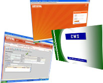

ABT Info’s software division keeps your technology up-to-date and specific to your business / operations, with apt services and technologies. With our in-depth multi domain knowledge, technical expertise and industry standard quality process, we provide solutions for customer’s unique requirement that mitigates risk and meet our customer business needs.
The software that suits your specific requirements is not available in the market. When packaged products and software are not sufficient or flexible enough for your operation, ABT Info can custom-build solutions to your specifications – can help you drive innovation and expand into new markets while reducing the overall costs.
We help define and analyze your requirements, prepare specifications and design, develop, test and integrate software across multiple platforms. We follow full life-cycle approach for application development:
Full life-cycle application development : We assume start-to-finish responsibility for study, analysis, design, develop, testing and implementation of systems.
Our custom application development service includes:
 ABT Info helps enterprises effectively tackle the challenge of optimizing their IT application portfolio and minimizing business impact of downtime while keeping costs low. We provide comprehensive set of application management services including maintenance, re-engineering, and migration and testing.
ABT Info helps enterprises effectively tackle the challenge of optimizing their IT application portfolio and minimizing business impact of downtime while keeping costs low. We provide comprehensive set of application management services including maintenance, re-engineering, and migration and testing.
We apply extensive industry and technology expertise to help transform existing applications into a set of highly integrated, flexible and streamlined applications and processes.
By supporting some or all of your applications, our offerings ensure that your core systems remain operational, free of defects and responsive to changing user needs — and provide ongoing enhancements as required. As part of this process, we often introduce enhancements that improve service levels.
Our Application Management Service allows you to:
Migrating legacy systems, applications and databases can be a complex process. ABT Info experience expertise to manage your enterprise’s migration requirements smoothly and on time. Migration and reengineering services help our clients transition their mission critical application and productions from legacy platforms to newer, state-of-the art technologies. Below is the Migration Success Road Map:

ABT Info helps you reevaluate the needs of your customers, re-architect your product according to those requirements and develop it using new, modern technologies that will enhance your customers’ experience. Turn to ABT Info for an expert “tune-up” of your product—helping maximize performance while improving stability and usability.
Mobile computing is the ability to use computing capability without a pre-defined location and/or connection to a network to publish and/or subscribe to information.
Companies today understand the need for providing fast, high quality and innovative services to their customers and every day many of them use mobile applications for this purpose. Mobile technologies represent convenient, fast and popular technology, enabling all the employees, managers and customers work together and have immediate access to information anytime and anywhere. All our applications were designed to fit the specific requirements and objectives of our customers.
CRYSTAL ERP is web based software, whose purpose is to facilitate the flow of information between all business functions inside the boundaries of the organization and manage the connections to outside stakeholders. We have developed Crystal-ERP Solution for Sugar industry.
Our CRYSTAL solution is very easy to implement and use. It is designed to be modular, flexible, customizable, secure and incredibly robust for small and mid-sized businesses.
CRYSTAL offers you a very effective solution in the areas of Accounts, Excise, Purchase, Sales, Inventory, CMS, HR & Payroll Management and many more.
The basic goal is provide one central repository for all information that is shared by all the various ERP facets in order to smooth the flow of data across the organization.
 Testing takes about 25% to 35% time in any software development project. With the need for more robust and reliable software, testing has become a vital part of the SDLC and a specialized function in itself. Our testing practice offers comprehensive suites of software testing services on both the business and technical sides of testing that deliver accelerated results.
Testing takes about 25% to 35% time in any software development project. With the need for more robust and reliable software, testing has become a vital part of the SDLC and a specialized function in itself. Our testing practice offers comprehensive suites of software testing services on both the business and technical sides of testing that deliver accelerated results.
We work hard to encourage a spirit of innovation in all of our testing professionals and to share continually what we learn with customers.
| Work Flow Tool | GPS / RFID Vehicle Tracking System |
| Attendance Recording System | Tele Medicine |
| Cane Management System | Virtual Class Room |
| Vendor Management System | Virtual Data Room |
and more..